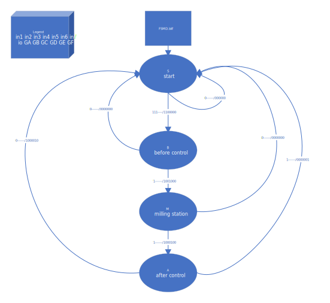
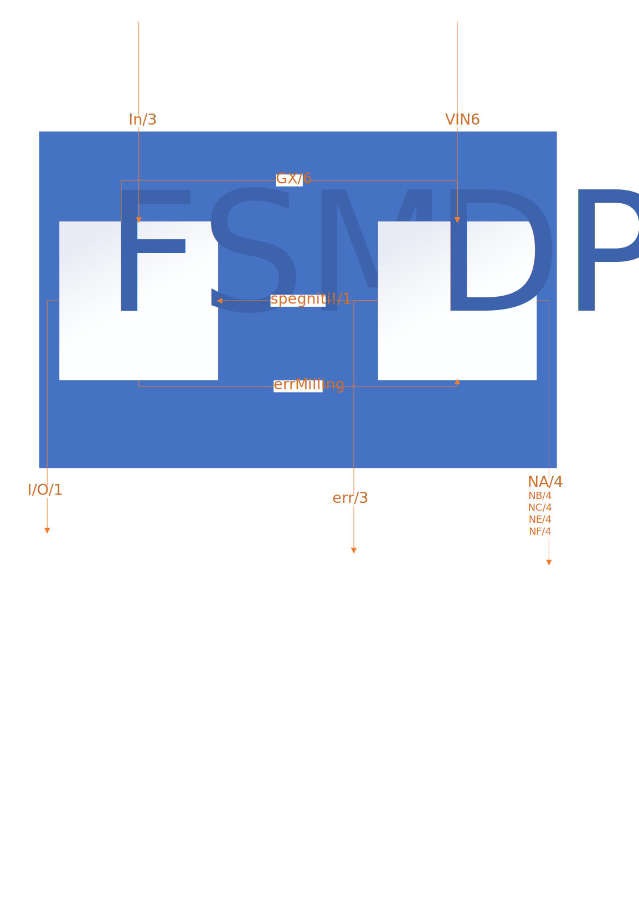

read README.blif first
The implementation of the machine control system had required four states, one undefined for the starting point of the machine and other three for each section. When turned on the machine require three consecutive bit T taken to the fsm, which will respond with the correct gates opening. The datapath analize gates and according to them will work on the correct registers. on overflof error registers will reset. The system is divided into FSM (fi nite state machine) and DP (Datapath). The FSM acquires the signals related to the reset of the various states and information on the overload of the cutting system from the Datapath, it takes care of switching the machines on and off, and in the case of a repeated overload, the general switch is turned off. The DP takes as input the state of the loads from the outside and the switches from the FSM and gives as output the consumption bands, and to the FSM, information on possible overloads.
FSM is composed of 5 states: S,B,I,A,M. Each of them represents different switch-on / off states. inputs: in1 in2VIN1 in3VIN2 VIN3 VIN4 VIN5 VIN6 outputs: ioFSM err1 err2 err3 GA GB GC GD GE GF NA1 NA2 NA3 NA4 NB1 NB2 NB3 NB4 NC1 NC2 NC3 NC3 NC4 NE1 NE2 NE3 NE4 NF1 NF2 NF3 NF4. The Datapath is divided into a section used for the management of the circuit-breakers, a section dedicated to load management, a section dedicated to the determination of the consumption range and finally, a section dedicated to the management of overload signals.Following a flow chart of each file with relative variables between them:

Here the stg:
FSMD:
 STATISTICHE GENERALI Statistiche del circuito prima dell’ottimizzazione Pi = 7 Po = 30 Nodes = 164 Latches = 37 Lits(sop) = 681 Statistiche del circuito dopo dell’ottimizzazione Pi = 7 Po = 30 Nodes = 164 Latches = 37 Lits(sop) = 362 Numero di gates e ritardo dopo la mappatura Numero di gate : 9056.00 (Total gate) Ritardo prima della mappatura : (38.00,38.00) Numero di gate dopo mappatura: 8896.00 Ritardo dopo la mappatura : (35.40,35.40) (Maximum arrival time)